Ann
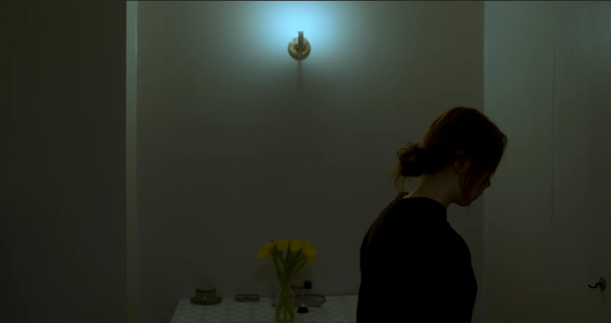
Ann is the story of a mother seeking forgiveness from her deceased daughter through food.
The film belongs to the TeleFood project, which explores food as a medium for connecting the real and digital worlds. It is set in a world where a big-tech Eastern company, The TeleFood Company, can upload the consciousness of a deceased person into the digital world. The living and the uploaded can then communicate without words, through the shared experience of food.
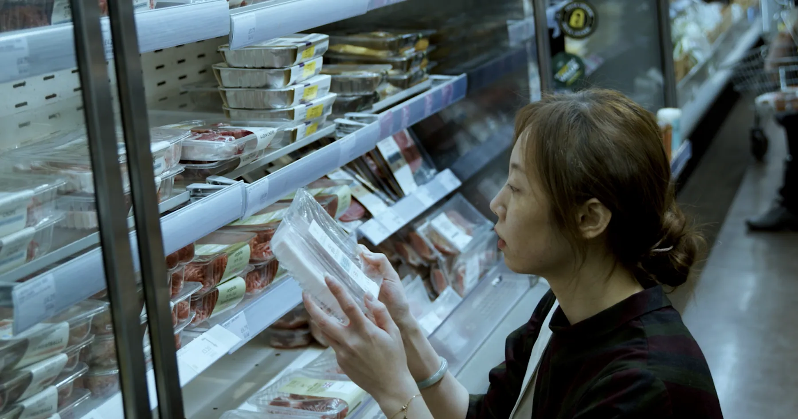
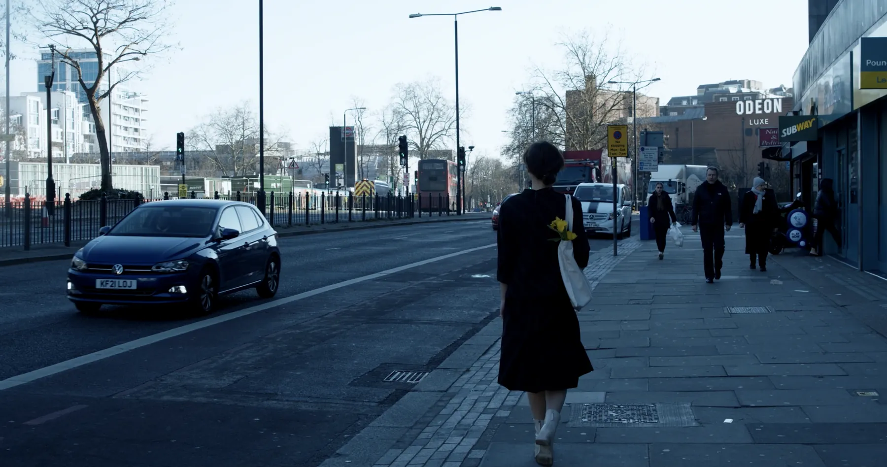
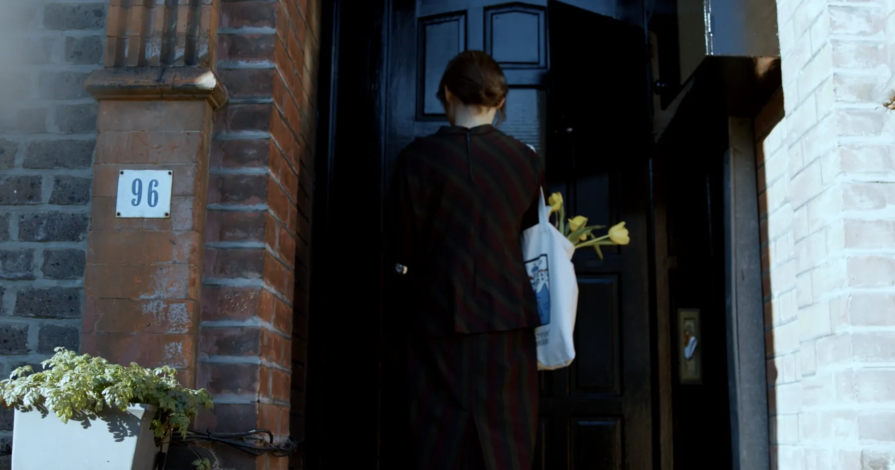
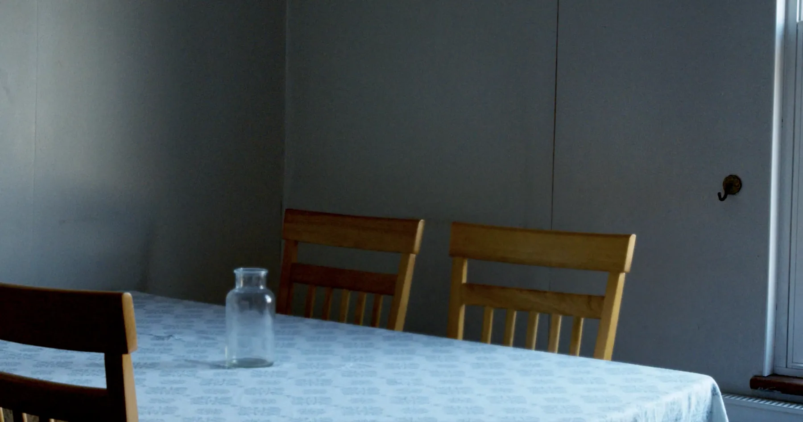
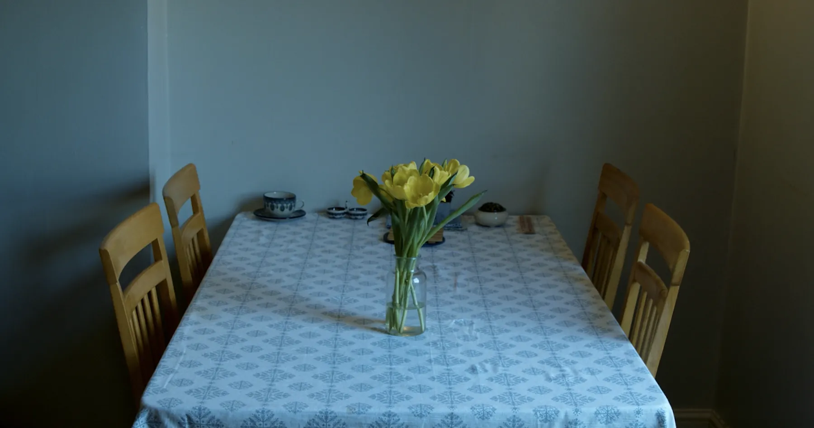
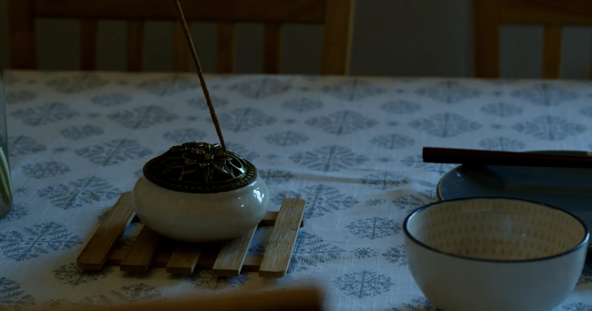
Food is a strong medium of communication, even where the virtual and the real intertwine. The project looks at the role of food in Eastern ritual culture, where a dish can carry a ritual, an apology or a blessing, and it argues that future forms of communication may become personalised and multisensory rather than verbal or visual alone.
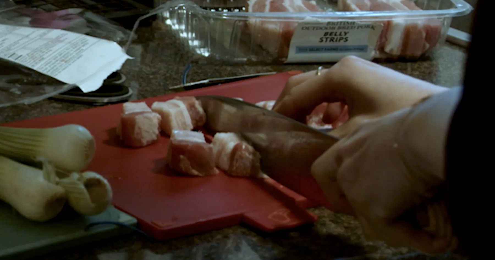
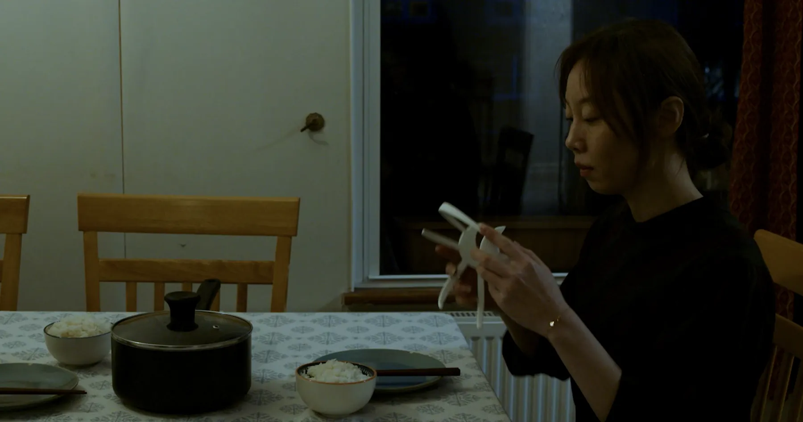
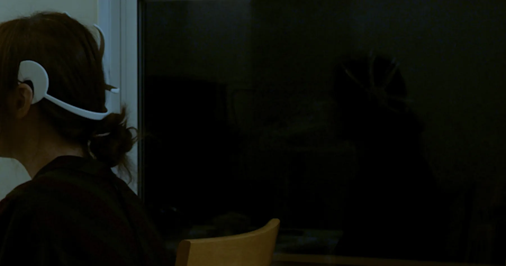
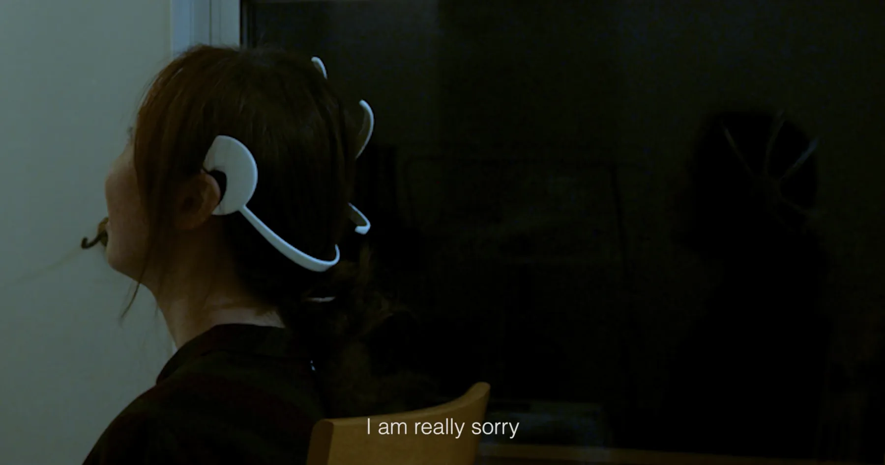
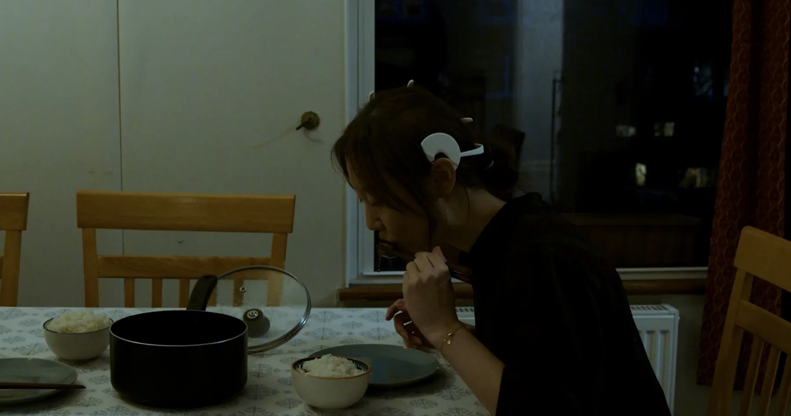
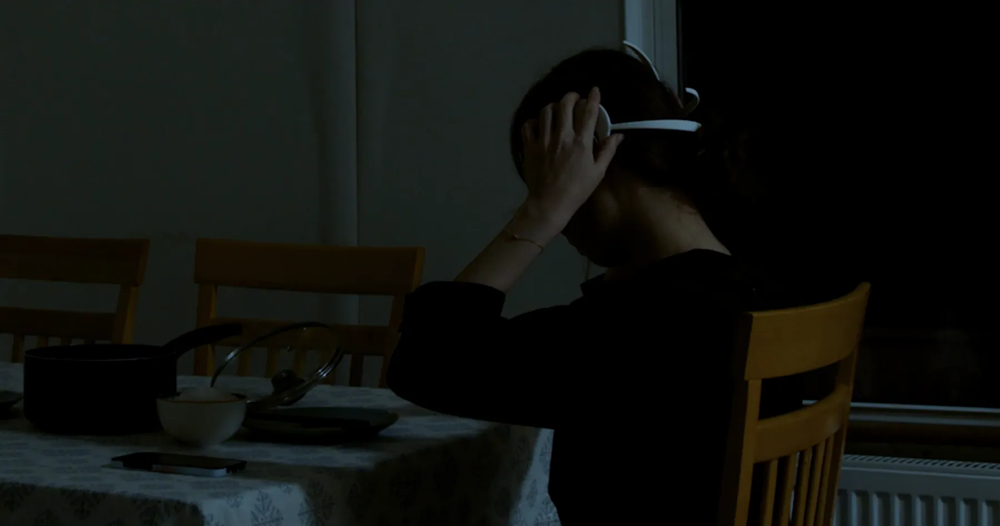
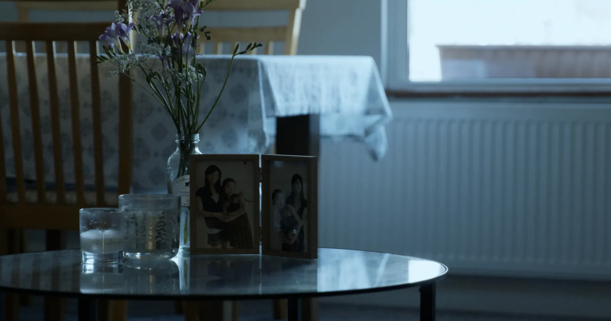
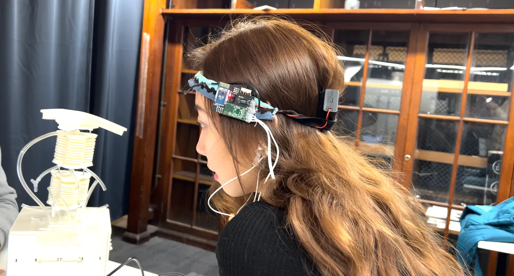
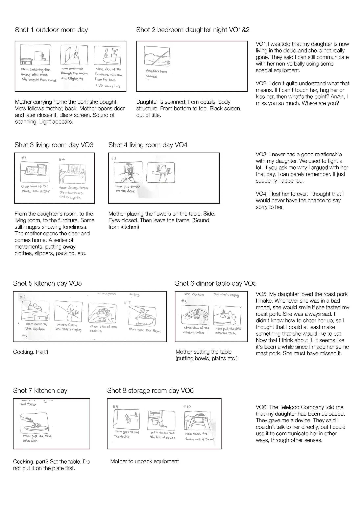
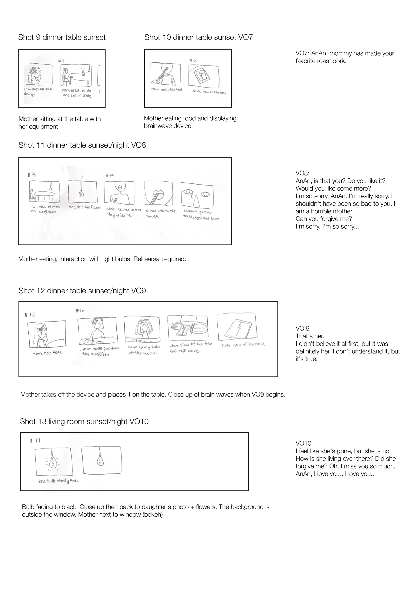

Credits
- Main artist and film director
- Jimmy Chen
- Actor
- Sheyl
- Camera
- Harry and Yun